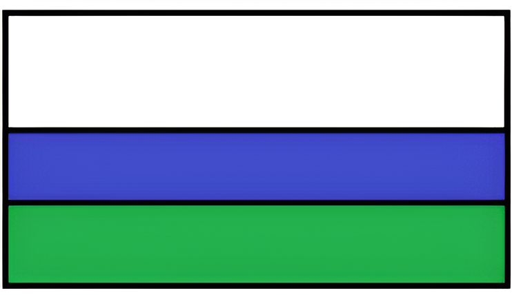

«Educación, Paz y Progreso, un compromiso de todos»
Este lema condensa la vocación comunitaria y orienta cada esfuerzo pedagógico en la región del Bajo Patía:
a) Educación
Resalta la educación como pilar fundamental para el desarrollo personal y colectivo. Es la herramienta clave para la superación de barreras y la consolidación de proyectos de vida dignos.
b) Paz
Subraya la paz como un elemento indispensable para el bienestar comunitario. Implica la no violencia, la convivencia pacífica y un entorno seguro donde cada niño pueda soñar y crecer.
c) Progreso
Hace hincapié en el avance social, ambiental y económico de la comunidad afrodescendiente, transformando realidades a través de la ciencia, la técnica y la preservación cultural.
d) Compromiso de Todos
Recuerda que la educación no es tarea solitaria: demanda la corresponsabilidad activa de estudiantes, docentes, directivos, padres y madres de familia y consejos comunitarios.
Bandera de la I.E. Sidón

Significado de sus Colores:
- El Color Blanco: Representa el anhelo irrenunciable de paz, transparencia y concordia en nuestra región del Patía y en toda Colombia.
- El Color Azul: Evoca la majestuosa riqueza hídrica del territorio: el río Patía, las quebradas y fuentes de agua que sostienen la vida y la pesca.
- El Color Verde: Simboliza la esperanza viva en un mañana mejor, los campos fértiles, la selva tropical húmeda y el trabajo agropecuario comunitario.
Escudo de la I.E. Sidón

Elementos Heráldicos:
- ☀️ El Sol Radiante: La luz viva hacia el conocimiento y la disipación de la ignorancia.
- ⛰️ Las Montañas: Los escalones del esfuerzo que se deben transitar con temple para conquistar los sueños.
- 🌊 El Río Patía: El continuo fluir del aprendizaje y la memoria ancestral que nunca se detiene.
- 📖 El Libro Abierto: La sabiduría compartida por los mayores para transmitirla a las nuevas generaciones.
- ✒️ La Pluma: El arte de escribir con autodeterminación el proyecto de vida propio.
- ⚙️ Ciencia y Trabajo: El saber puesto al servicio de la transformación social y el progreso comunitario.
El Himno que nos une en una sola voz
Nuestro himno institucional rinde tributo a los forjadores del corregimiento, a la belleza de la cuenca del Patía y a la misión formadora de líderes de bien.
Leer las 5 Estrofas y el Coro →
Estudiantes en actos cívicos y jornadas de identidad cultural en Sidón.